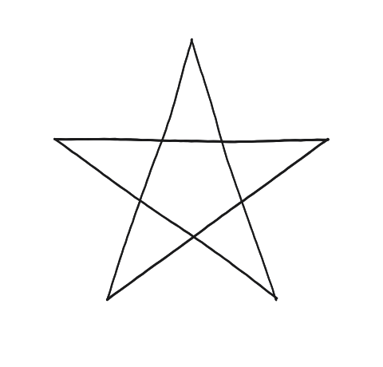
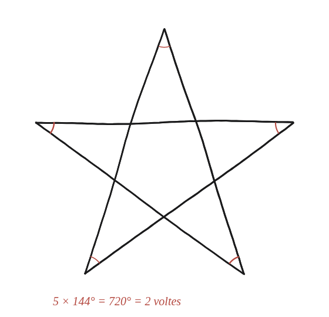

Què passa si la suma dels angles és més d'una volta sencera?

Una volta sencera és el que ja es coneix
Resseguint el contorn d'un polígon convex i tornant al punt de partida, s'ha girat exactament 360° en total —una volta sencera, sumant a cada vèrtex l'angle que es gira cap enfora. La pregunta és què passa quan el camí es creua a si mateix, com al pentagrama de la Qüestió 5.
L'angle de la punta no és el que es gira
Cal distingir dues coses que semblen la mateixa però no ho són: a cada punta del pentagrama, l'angle interior és 36° (calculat a la Qüestió 5). Però el que es gira en recórrer el contorn a cada punta no és aquest angle interior, sinó el seu suplementari: 180°−36°=144° —perquè el gir es fa cap enfora del traç, no cap endins, exactament igual que en resseguir un polígon convex normal.
Sumar els girs de totes les puntes
Cada una de les cinc puntes aporta el mateix gir de 144°. La construcció marca aquest mateix angle a cadascuna: és literalment l'angle de 36° que ja s'havia trobat a la Qüestió 5, però mirat des de fora, com a suplementari.

Quantes voltes fa el camí
Multiplicant 144° pel nombre de puntes (5): 5×144°=720°. Dividint pels 360° d'una volta sencera: 720°/360°=2. El pentagrama no es tanca després d'una sola volta, com un polígon convex, sinó després de dues voltes completes del traç al voltant del seu centre abans de tornar al punt de partida.
El pentagrama {5/2} fa dues voltes completes abans de tancar-se (5×144°=720°=2×360°), i l'estrella de vuit puntes {8/3} en fa tres (8×135°=1080°=3×360°). Aquest nombre de voltes és exactament el k del símbol {n/k} amb què es construeixen les estrelles: no és casualitat, és la mateixa idea —quants vèrtexs se salten en dibuixar-les— mirada des de dues bandes diferents.
Comprovació
5×144°=720°=2×360° —el pentagrama {5/2} fa dues voltes completes. Amb l'estrella de vuit puntes {8/3} (Qüestió 5): cada gir és 3×360°/8=135°, i 8×135°=1080°=3×360°, tres voltes.